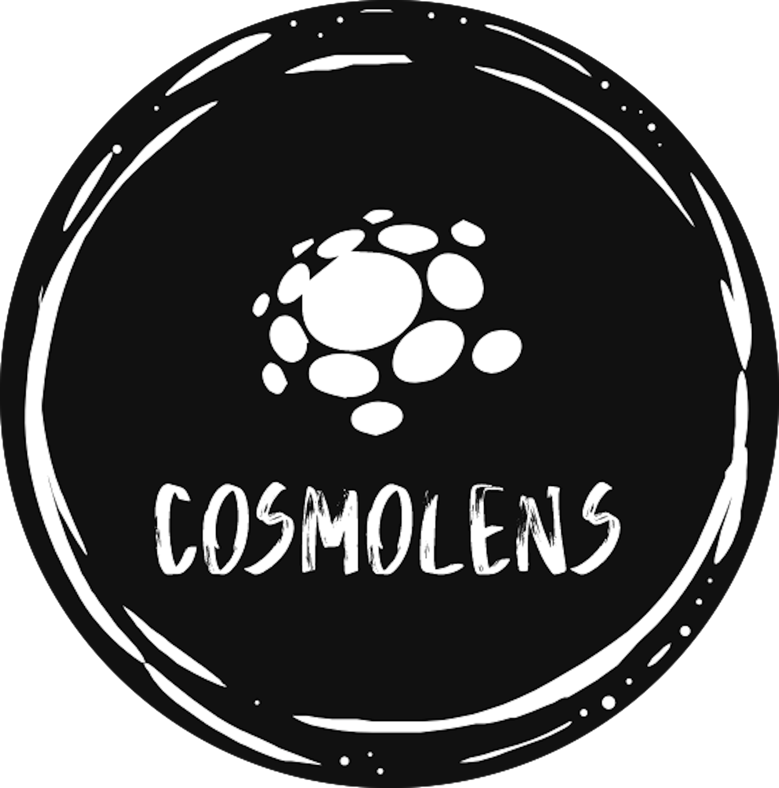
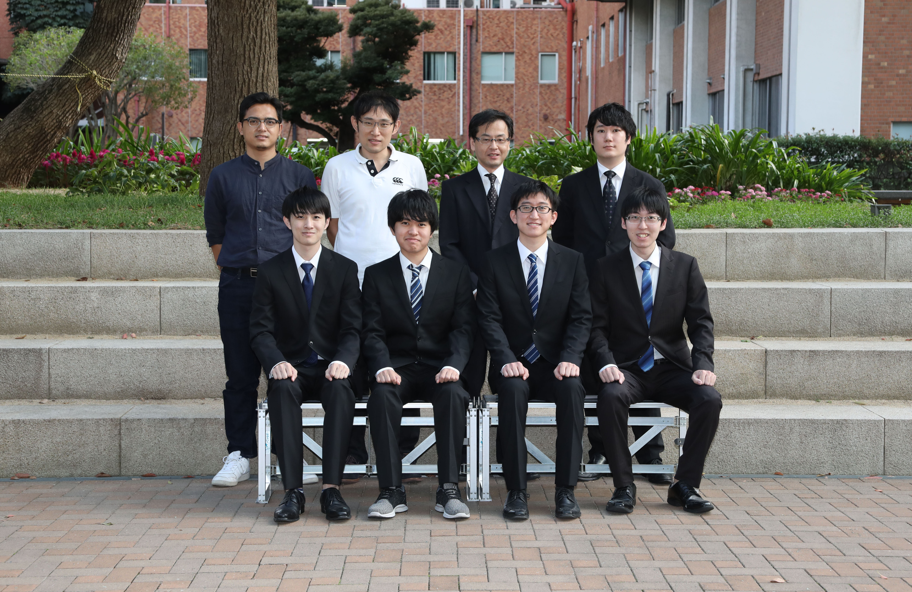
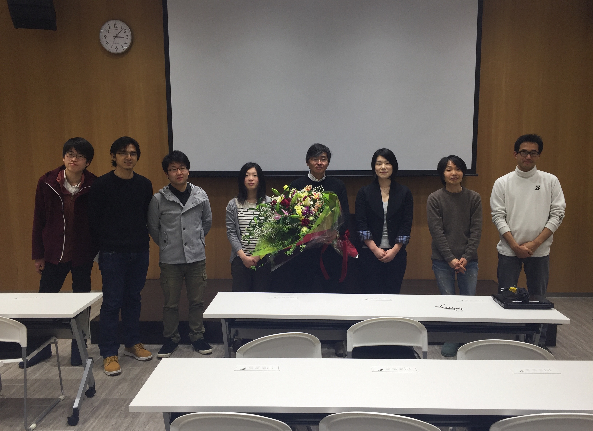
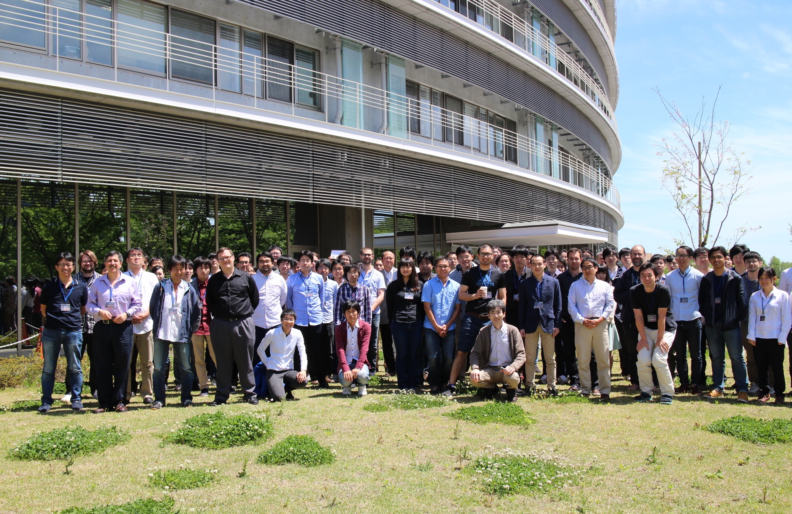
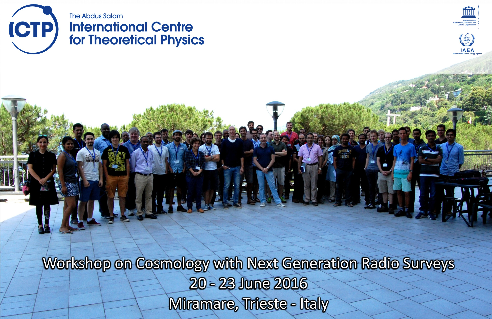
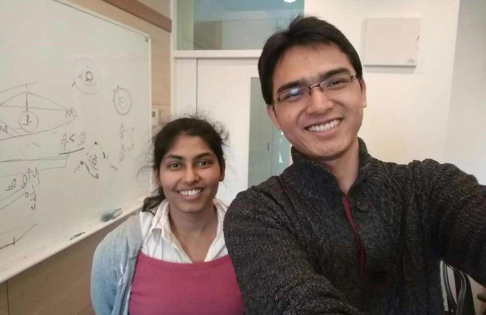

About Myself
I am an Astrophysicist who grew up from small city, Banjar, West Java. After finishing my PhD from Tohoku University, Japan, I back to my country at the Bosscha Observatory as a researcher for six months. I started my postdoc position with Prof. Kaiki Taro Inoue in Kindai University, Japan, where I spent most of the time participating Strong Lensing working groups in HSC-SSP Program, especially on strong lensing analysis.
28 of 44
Refereed Publications
9
Research Projects (in ITB)
5
as Journal Reviewers


Cosmology Group, Kindai University

Strong Lensing People

Futamase sensei's Lab

HSC User Meeting 2017


With Dr. Anupreeta More